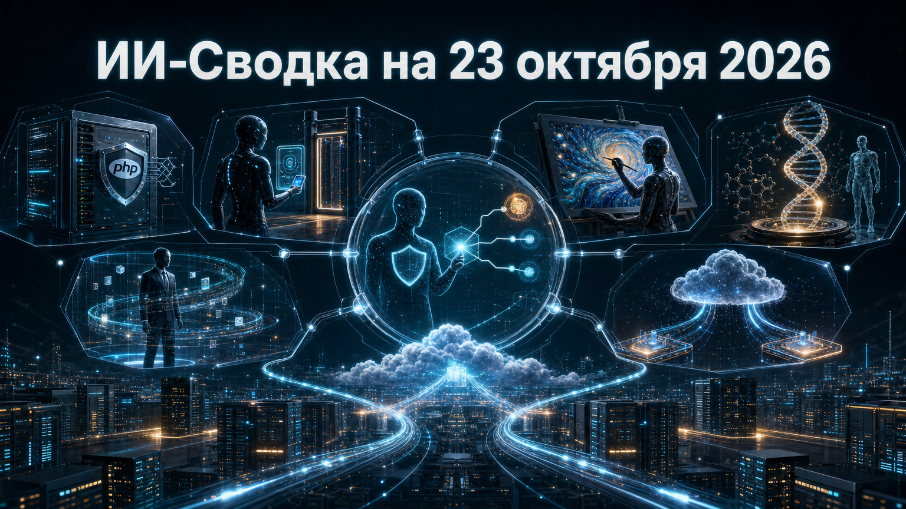

Сегодняшняя повестка показывает, что агентный ИИ всё глубже входит в производственные контуры: от поиска критических уязвимостей до доступа к пользовательским аккаунтам, корпоративным данным и облачным платформам. Одновременно поставщики моделей пытаются занять специализированные ниши — быстрые решения в приложениях, дизайн, биологические данные и управляемые корпоративные агенты.
Практический вывод для компаний: ценность модели всё чаще определяется не только качеством генерации, но и тем, как она подключается к данным, удостоверяет действия, ограничивает доступы и встраивается в уже используемые платформы.
OpenAI объявила general availability Decisions API на базе GPT-6 Luna. Он рассчитан не на развернутые текстовые ответы, а на ограниченные и быстрые решения в приложениях и агентных workflow: классификацию, маршрутизацию, выбор следующего действия и оценку вариантов. API поддерживает текст, изображения и структурированные входные данные, а также типы ответов probability, choice и score.
Компания также заявила интеграцию с GPT-Live, prompt caching и размещение inference в США и ЕС. Это усиливает конкуренцию в сегменте decision-моделей, где важны задержка, стоимость и предсказуемый формат результата; независимого сопоставления производительности с альтернативами в пуле источников нет. OpenAI makes its Jev competitor widely available as decision model competition heats up
Wiz сообщила о coordinated disclosure двух критических дефектов PHP — CVE-2026-109618 и CVE-2026-109619. По данным исследователей, уязвимости позволяли строить цепочки неаутентифицированного удалённого выполнения кода и раскрытия памяти; демонстрации проводились против распространённых CMS, включая WordPress, Drupal и Joomla. Исправления PHP были выпущены 21 октября.
Wiz заявляет, что в исследовании использовались Wiz Atlas, Gemini 4 Argon и GPT-5.6 Sol, а OpenAI подтвердила участие своей программы Patch the Planet в координации раскрытия. Сюжет важен сразу с двух сторон: модели ускоряют защитный поиск сложных ошибок, но тем самым снижают и барьер для построения эксплуатационных цепочек; оценка масштаба затронутых систем и роли моделей исходит от участников раскрытия. PHP2Shell: AI uncovers critical RCE vulnerabilities affecting 70% of the Internet
1Password представила 1Password for Agents — механизм делегированного входа, при котором агент ИИ запрашивает доступ к сайту, а пользователь подтверждает операцию на своём устройстве. После этого 1Password заполняет форму входа, не раскрывая пароль самой модели или агенту.
Компания сообщает, что агент использует отдельный цифровой ключ для идентификации, а среди заявленных экосистем есть Claude, ChatGPT Work, Grok Bot и другие агентные продукты. Это адресует один из главных практических рисков агентного ИИ — передачу долговременных секретов программам, которые могут ошибиться или попасть под prompt injection; доступность интеграций у каждого партнёра может различаться. 1Password launches a way for AI agents to log in on your behalf without seeing your password
Canva представила Canva Craft — свою первую собственную модель генерации изображений. По описанию компании, система сначала планирует композицию, затем создаёт результат с разрешением до 2K и поддержкой до 30 соотношений сторон. Модель доступна в Dream Lab и через Canva API.
Canva заявляет, что обучала Craft на дизайнах и созданных людьми шаблонах своей библиотеки, а не на фотографиях. Для рынка это означает дальнейший переход крупных прикладных платформ от роли интерфейса над сторонними моделями к созданию собственных генеративных слоёв; технические и качественные характеристики пока в основном основаны на заявлениях самой компании. Canva releases its first image generation model
Hugging Face опубликовала Carbon-X — открытую модель на 14,8 млрд параметров, построенную на Qwen3-14B и адаптированную для работы со смешанными ДНК- и текстовыми данными. Она распространяется по лицензии Apache-2.0 и предназначена для взаимодействия с последовательностями ДНК через естественно-языковый интерфейс.
В описании релиза говорится об обучении на 300 млрд токенов смешанных данных. Релиз расширяет набор доступных open-source инструментов для биоинформатики, но не должен трактоваться как готовый клинический продукт: заявленные benchmark-результаты и прикладная точность требуют независимой проверки и профильной валидации. Hugging Face releases Carbon-X, an open 14B model that lets users chat with DNA
NVIDIA сообщила о расширении open-source NVIDIA Agent Toolkit. По заявлению компании, новые инструменты должны помочь организациям настраивать агентов ИИ, подключать их к корпоративным данным, наблюдать за их действиями и задавать правила управления.
Это отражает сдвиг корпоративного рынка от демонстрационных чат-ботов к платформам эксплуатации: агентам нужны не только инструменты, но и контроль источников данных, мониторинг действий и управляемые ограничения. Публикация NVIDIA носит характер продуктового анонса и не содержит в пуле независимой оценки зрелости либо безопасности конкретных внедрений. NVIDIA Agent Toolkit Expands, Grounding Enterprise Agents in Company Data
OpenAI сообщила, что её модели появятся в Google Cloud. Сам факт анонса важен для корпоративного рынка: заказчики, использующие инфраструктуру Google Cloud, потенциально получат ещё один путь к моделям OpenAI внутри привычного облачного контура.
В доступном материале не раскрыты конкретный перечень моделей, сроки регионального развёртывания, коммерческие условия и детали управления данными. Поэтому новость следует воспринимать как заявление о расширении дистрибуции, а не как подтверждение немедленной доступности всех сервисов OpenAI во всех регионах Google Cloud. OpenAI models are coming to Google Cloud